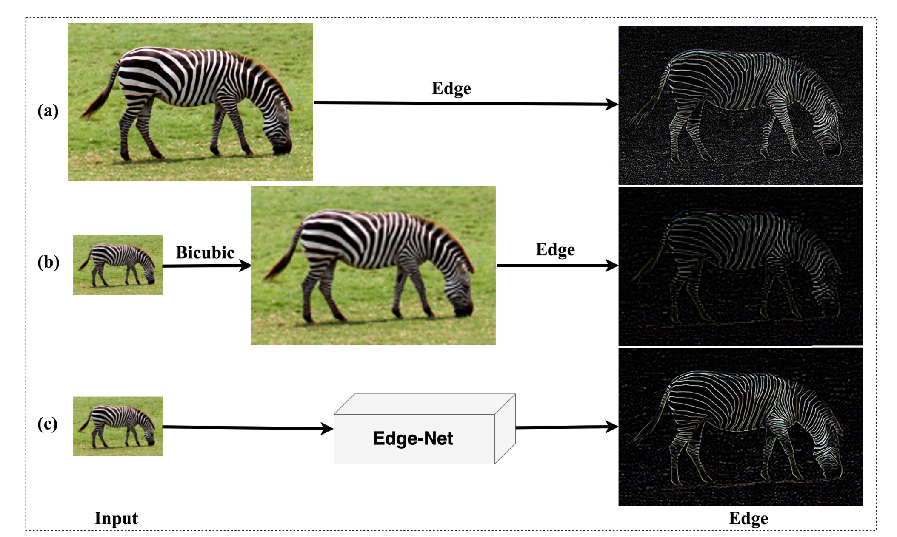
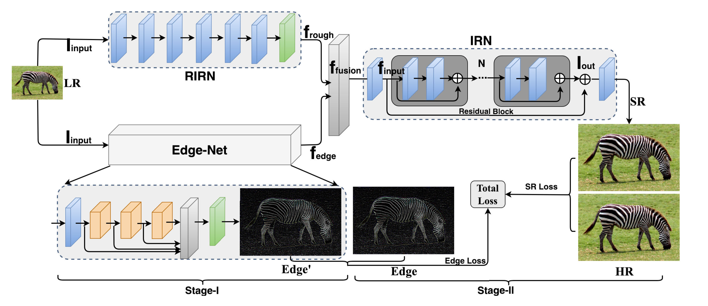
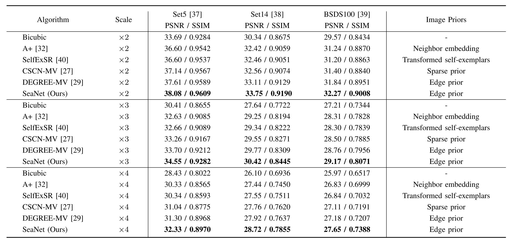
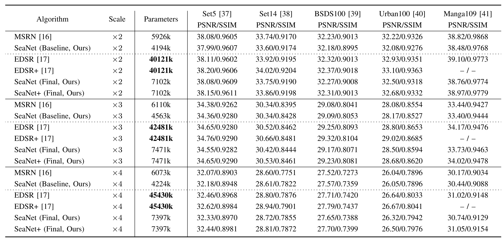

Soft-edge Assisted Network for Single Image Super-ResolutionFaming Fang1 Juncheng Li1* Tieyong Zeng21 East China Normal University 2 The Chinese University of Hong KongAuthor names alphabetically, * First contributor Contact us: cvjunchengli@gmail.con This achievement was completed during the visit of the Chinese University of Hong Kong |
Abstract
The task of single image super-resolution (SISR) is a highly ill-posed inverse problem since reconstructing the high-frequency details from a low-resolution image is challenging. Most previous CNN-based super-resolution (SR) methods tend to directly learn the mapping from the low-resolution image to the high-resolution image through some complex convolutional neural networks. However, the method of blindly increasing the depth of the network is not the best choice because the performance improvement of such methods is marginal but the computational cost is huge. A more efficient method is to integrate the image prior knowledge into the model to assist the image reconstruction. Indeed, the soft-edge has been widely applied in many computer vision tasks as the role of an important image feature. In this paper, we propose a Soft-edge assisted Network (SeaNet) to reconstruct the high-quality SR image with the help of image soft-edge. The proposed SeaNet consists of three sub-nets: a rough image reconstruction network (RIRN), a soft-edge reconstruction network (Edge-Net), and an image refinement network (IRN). The complete reconstruction process consists of two stages. In Stage-I, the rough SR feature maps and the SR soft-edge are reconstructed by the RIRN and Edge-Net, respectively. In Stage-II, the outputs of the previous stages are fused and then fed to the IRN for high-quality SR image reconstruction. Extensive experiments show that our SeaNet converges rapidly and achieves excellent performance under the assistance of image soft-edge.
Edge Detection Pipeline
|  |
SeaNet
|  |
Visual Results
|
|
PSNR/SSIM Results
|  |
 |
|  |
Downloads
| Paper | : [ TIP2020_SEANET.pdf ] |
| Experimental results | : [ SeaNet_SR.zip ] |
| Pre-trained model | : [ TIP2020_SEANET_premodel.zip ] |
| Source Code. | : [ Code ] |
BibTex